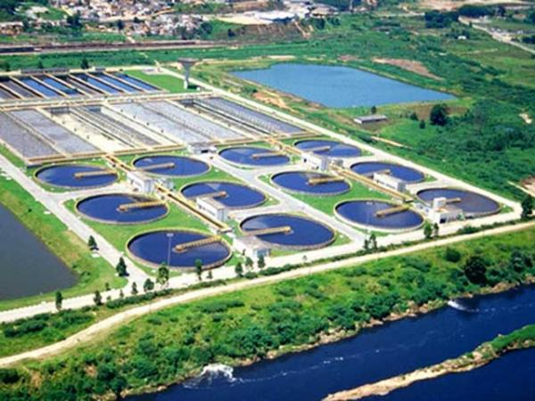

TRATAMIENTO DE AGUAS RESIDUALES DE ORIGEN DOMESTICO
Se dice que no existe agua nueva en el mundo, quizá hoy podrás estar bebiendo la misma agua que tomó Jesucristo hace mas de 2000 años o bañándote con la misma agua que uso la legendaria Cleopatra. Aunque el agua es un recurso renovable pues puede ser obtenida por procesos naturales como es el ciclo hidrológico, algunos de los depósitos acuíferos en donde esta almacenada tienen procesos largos de renovación por lo que se les considera como no renovables; aunado al cambio climático y el poco o nulo tramiento existente en la mayoría de los pueblos y ciudades que agravan la escasez de este recurso. Es por ello la importancia de la preservación de este vital líquido y el tratamiento de las aguas servidas.
NUESTROS SISTEMAS DE TRATAMIENTO
Nuestra empresa cuenta con mas de 50 años de experiencia en el tratamiento de las aguas residuales en todas sus modalidades principalmente en las aguas residuales de origen doméstico. Nuestros equipos cuentan con los más altos estándares de calidad y los parámetros entregados en el efluente en relación a la DBO5, sólidos suspendidos y demás parámetros establecidos, cumplen holgadamente con las normas oficiales incluyendo la NOM ECOL 001-96. Estaremos atentos para escuchar sus necesidades y hacerle una propuesta de acuerdo a sus requerimientos.
- Tratamiento de aguas residuales municipales 
- PTAR tipo paquete para tratamiento de aguas residuales domésticas
- Reuso de aguas tratadas